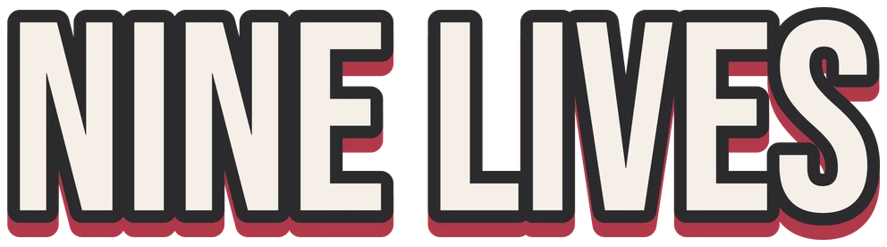

<!DOCTYPE html>
<html lang="en">
<head>
    <meta charset="utf-8">
    <title>Nine Lives 3D</title>
    <!-- phone-friendly: real size, no pinch zoom (swipes are game controls) -->
    <meta name="viewport" content="width=device-width, initial-scale=1, maximum-scale=1, user-scalable=no">
    <meta name="theme-color" content="#2B2B2D">
    <meta name="apple-mobile-web-app-capable" content="yes">
    <meta name="mobile-web-app-capable" content="yes">
    <meta name="description" content="Nine Lives 3D - a deadpan cat on a skateboard. Not impressed.">
    <link rel="icon" href="icon-192.png">
    <link rel="apple-touch-icon" href="apple-touch-icon.png">
    <link rel="preconnect" href="https://fonts.googleapis.com">
    <link rel="stylesheet" href="https://fonts.googleapis.com/css2?family=Poppins:wght@500;700&display=swap">
    <style>
        :root {
            --charcoal: #2B2B2D; --panel: #343436; --card: #F3EFE8; --ink: #2B2B2D;
            --pink: #D59CA4; --red: #C43B4B; --muted: #A9A4A0;
        }
        html, body {
            margin: 0; padding: 0; height: 100%; overflow: hidden;
            background: var(--charcoal);
            overscroll-behavior: none;
            font-family: "Poppins", system-ui, -apple-system, "Segoe UI", sans-serif;
        }
        body { display: flex; justify-content: center; align-items: center; }
        #stage { display: flex; align-items: center; height: 100%; }
        #canvas {
            display: block; border: none; outline: none;
            touch-action: none;            /* swipes go to the game, not the page */
            -webkit-user-select: none; user-select: none;
            -webkit-tap-highlight-color: transparent;
        }

        /* Controls panel beside the game (computers only, when there's room) */
        #help {
            display: none; width: 268px; margin-left: 32px; color: var(--card);
            -webkit-user-select: none; user-select: none;
        }
        body.wide #help { display: block; }
        #help img.logo { width: 190px; display: block; margin: 0 0 6px 2px; }
        #help .tag { color: var(--muted); font-size: 13px; margin: 0 0 22px 4px; }
        #help h2 {
            font-size: 12px; letter-spacing: .14em; text-transform: uppercase;
            color: var(--pink); margin: 0 0 10px 4px; font-weight: 700;
        }
        .card { background: var(--panel); border-radius: 18px; padding: 8px 14px; margin-bottom: 16px; }
        .row { display: flex; align-items: center; justify-content: space-between; padding: 8px 0; font-size: 14px; }
        .row + .row { border-top: 1px solid rgba(255,255,255,.07); }
        .row span:last-child { color: #DAD5CF; text-align: right; }
        .keys { display: flex; gap: 5px; flex-wrap: wrap; max-width: 120px; }
        kbd {
            display: inline-flex; align-items: center; justify-content: center;
            min-width: 26px; height: 26px; padding: 0 7px; box-sizing: border-box;
            background: var(--card); color: var(--ink); border-radius: 7px;
            font: 700 12px "Poppins", system-ui, sans-serif;
            box-shadow: 0 3px 0 #BDB6AC;
        }
        #focusHint {
            display: none; margin-top: 4px; padding: 10px 14px; border-radius: 14px;
            background: var(--red); color: #fff; font-size: 13px; font-weight: 700; text-align: center;
        }
        body.blurred #focusHint { display: block; }
    </style>
</head>
<body oncontextmenu="return false">
    <div id="stage">
        <canvas id="canvas"></canvas>
        <aside id="help" aria-label="Controls">
            
            <p class="tag">3D skate runner. Not impressed.</p>
            <h2>Keyboard</h2>
            <div class="card">
                <div class="row"><span class="keys"><kbd>&larr;</kbd><kbd>&rarr;</kbd><kbd>A</kbd><kbd>D</kbd></span><span>Change lane</span></div>
                <div class="row"><span class="keys"><kbd>&uarr;</kbd><kbd>W</kbd><kbd>Space</kbd></span><span>Jump</span></div>
                <div class="row"><span class="keys"><kbd>&darr;</kbd><kbd>S</kbd></span><span>Slide / drop fast</span></div>
                <div class="row"><span class="keys"><kbd>P</kbd></span><span>Pause / resume</span></div>
                <div class="row"><span class="keys"><kbd>Esc</kbd></span><span>Pause / menu</span></div>
                <div class="row"><span class="keys"><kbd>Space</kbd><kbd>Enter</kbd></span><span>Play / play again</span></div>
            </div>
            <h2>Mouse</h2>
            <div class="card">
                <div class="row"><span>Click</span><span>Buttons, jump</span></div>
                <div class="row"><span>Drag</span><span>Swipe like on a phone</span></div>
            </div>
            <div id="focusHint">Click the game to play</div>
        </aside>
    </div>
    <script>
        window.addEventListener("load", function () { main(); });
        // stop the page from scrolling / bouncing when you swipe on a phone
        document.addEventListener("touchmove", function (e) { e.preventDefault(); }, { passive: false });
        // game keys must not scroll the page (or the page around it when embedded)
        var GAME_KEYS = { ArrowUp: 1, ArrowDown: 1, ArrowLeft: 1, ArrowRight: 1, Space: 1 };
        window.addEventListener("keydown", function (e) { if (GAME_KEYS[e.code]) e.preventDefault(); });

        // Computers: show the controls panel beside the game when there's room for it.
        var touchOnly = window.matchMedia && window.matchMedia("(hover: none) and (pointer: coarse)").matches;
        function layout() {
            var w = window.innerWidth, h = window.innerHeight;
            var column = Math.round(h * 0.4615);
            document.body.classList.toggle("wide", !touchOnly && w > h * 0.7 && w >= column + 340);
        }
        window.addEventListener("resize", layout);
        layout();

        // Keys only reach the game while this page has focus (e.g. after clicking it inside another page).
        window.addEventListener("blur", function () { document.body.classList.add("blurred"); });
        window.addEventListener("focus", function () { document.body.classList.remove("blurred"); });
        if (!document.hasFocus()) document.body.classList.add("blurred");
        // clicking the panel must not take keyboard focus away from the game
        document.getElementById("help").addEventListener("mousedown", function (e) { e.preventDefault(); e.stopPropagation(); });
    </script>
    <script type="text/javascript" charset="utf-8" src="app.js"></script>
</body>
</html>
